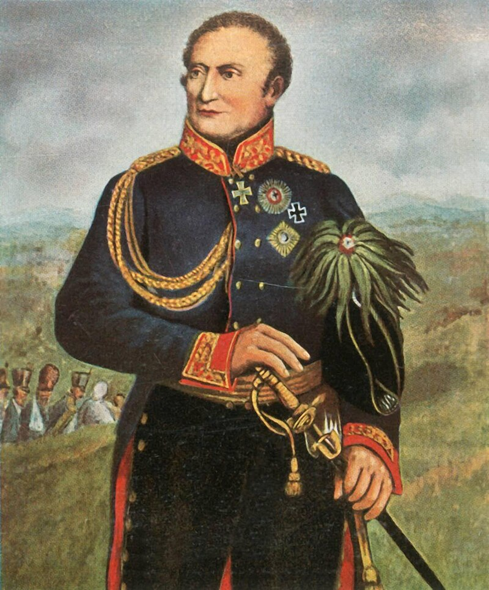
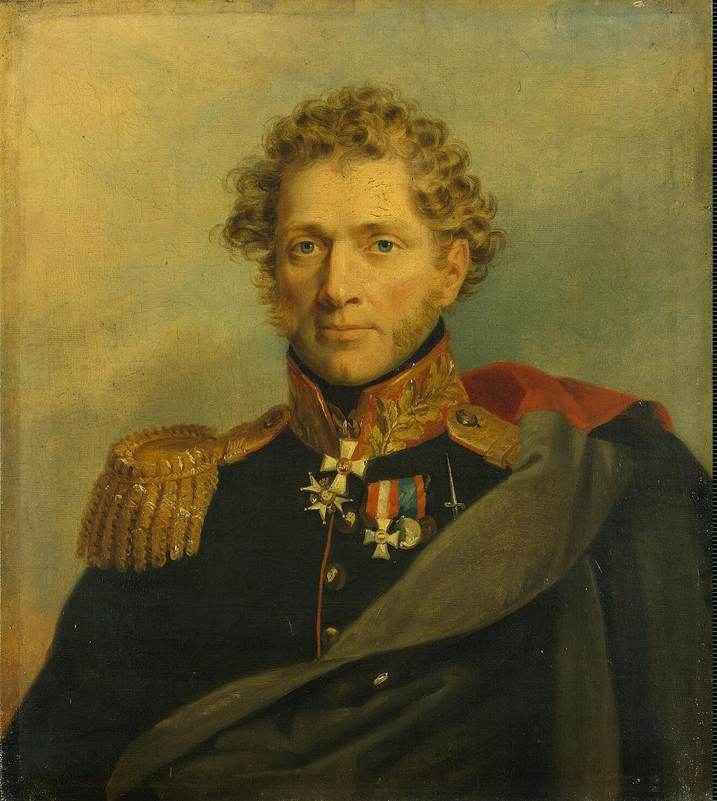
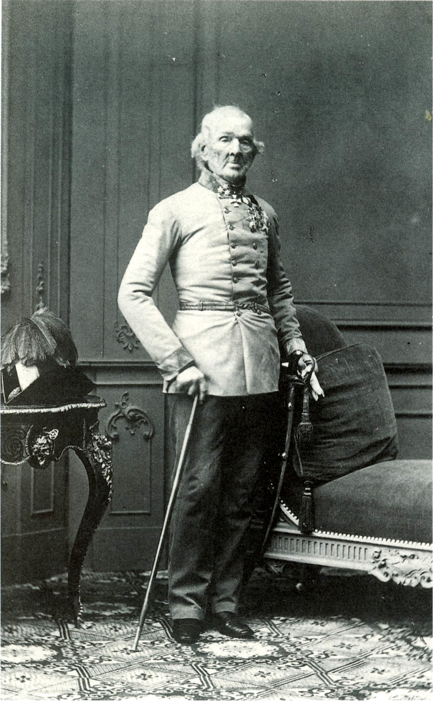
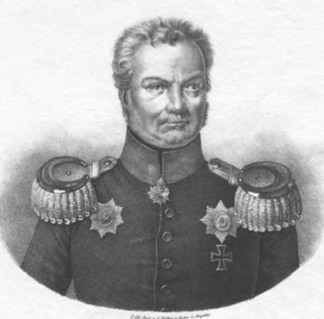

새로운 전쟁의 준비 (1) - 불만 가득한 연합군
게시: 2023-10-16T06:30:38+09:00
기본적인 작전안이 합의되자, 러시아군은 약속대로 비트겐슈타인의 군단과 콘스탄틴 대공 휘하의 러시아 근위대와 예비대를 보헤미아로 보내기 시작했습니다. 프로이센군도 클라이스트(Friedrich Graf Kleist von Nollendorf)의 제2 군단과 프로이센 근위대를 보냈습니다. 그리고 베르나도트가 지휘할 북방군을 편성하기 위해 러시아는 빈칭게로더의 군단을 북으로 보냈습니다. 프로이센군은 이미 북방에 주둔하고 있던 빌로의 제3 군단과 타우엔치엔의 제4 군단의 지휘권을 베르나도트에게 넘기기로 했습니다.

(블뤼허도 프로이센 출신이 아니고 그나이제나우도 원래는 작센 출신이었지만, 나폴레옹보다 7살 연상이었던 클라이스트는 베를린 출신 전형적인 프로이센의 융커 귀족이었습니다. 다만 그 역시 명문가 출신은 아니었는지 18세에 임관한 이후 많은 전투에 참전했지만 21년 후에야 소령으로 진급했습니다. 그는 예나 전투에도 참전했었고 나중에 라이프치히 전투에도 참전했습니다. 이후 그는 당시 유명한 요새였던 에르푸르트(Erfurt)의 포위에 투입되었고, 결국 다음해인 1814년 초에 그 항복을 받아내었습니다. 불행히도 장수하지는 못하여 60세의 나이로 사망했습니다.) 이 조치는 프리드리히 빌헬름과 그의 직속 참모인 크네제벡 대령 등 프로이센 수뇌부도 다 동의한 바였지만 모든 프로이센군 장군들이 이를 찬성한 것은 아니었습니다. 일단 이 트라헨바흐 작전 계획은 연합군 입장에서는 절대 비밀하에 기안된 것이라서, 그나이제나우는 물론 블뤼허도 그 자세한 내용에 대해 모르고 있었습니다. 나중에야 프로이센군 4개 군단이 3개 방면군으로 뿔뿔이 흩어지게 되었다는 것을 알게 된 그나이제나우는 크게 분개했습니다. 특히 보헤미아로 가서 오스트리아의 슈바르첸베르크의 지휘를 받게 될 클라이스트 군단 및 프로이센 근위대의 지휘 체계에 대해 더욱 화가 났습니다. 이들은 슈바르첸베르크의 명령을 받는 것도 아니었고, 그들과 슈바르첸베르크의 지휘 체계 사이에는 러시아군 바클레이가 있었기 때문이었습니다. 갑을관계에서 을도 아니고 병에 해당하는 지위가 된 것이었지요. 이때 즈음해서 샤른호스트가 뤼첸 전투에서 입은 부상이 악화되어 사망했다는 비보가 전해지면서, 그나이제나우는 샤른호스트가 맡았던 프로이센군 총참모장의 자리로 승진했습니다. 야전군에 블뤼허와 함께 붙어 있기를 원하던 그나이제나우는 이 승진에 대해 별로 달가와하지 않았습니다만, 이 승진으로 인해 그나이제나우는 국왕 프리드리히 빌헬름에게 직접 의견을 전달할 수 있는 특권을 얻었고, 그는 이 특권을 마음껏 불평을 늘어놓는데 사용했습니다. 그는 프라드리히에게 보내는 편지에, 이렇게 프로이센군을 남의 나라 군대 밑으로 분산배치 한다면 승전을 한다고 해도 그 영광에 프로이센의 이름을 올리지 못할 뿐만 아니라 다른 나라 군대의 패배에 대해서는 잘못한 것도 없이 비난을 받을 거라고 항의했습니다. 슐레지엔에 이제 남은 프로이센 부대라고는 요크의 제1 군단과 슐레지엔 국민방위군(landwehr) 뿐이었는데, 자켄(Saken)과 랑쥬론(Langeron)의 러시아군이 슐레지엔에 남아 슐레지엔 방면군을 보강하기로 했습니다. 그나이제나우의 신경을 거슬린 것은 제일 규모가 작은 슐레지엔 방면군조차도 그 지휘권이 프로이센 장군에게 올지 여부가 아직 확실하지 않았다는 것이었습니다. 다행인 것은 결국 휴전이 종료되는 시점 바로 직전인 8월 8일 슐레지엔 방면군의 지휘권이 블뤼허에게 내려진다는 명령서가 발부되었다는 것이었습니다. 이미 며칠 전에 프리드리히 빌헬름과 알렉산드르 간에 그렇게 하기로 약속이 되어 있었던 것입니다. 이렇게 편성이 마무리된 연합군은 북부 브란덴부르크에서 남부 슐레지엔까지 전개된 병력만 약 50만에 1380문의 대포를 보유한 막강한 것이었습니다. 그 뿐만 아니라 약 35만의 제2선급 보조부대를 추가로 편성할 수 있었습니다. 그 배치는 다음과 같았습니다. 1) 보헤미아 방면군 : 슈바이첸베르크 휘하 약 25만4천 (오스트리아군 12만7천 + 러시아군 8만2천 + 프로이센군 4만5천).
2) 북부 방면군 : 베르나도트 휘하 약 12만5천 (프로이센군 7만3천 + 러시아군 2만9천 + 스웨덴군 2만3천). 추가로 함부르크의 다부를 견제하는 발모덴(Ludwig Georg Thedel Graf von Wallmoden) 휘하의 다양한 독일 소국 출신의 2만8천.
3) 슐레지엔 방면군 : 블뤼허 휘하 약 10만5천 (프로이센군 3만9천 + 러시아군 6만6천). 추가로 4만7천의 국민방위군.

(발모덴은 프로이센이 아니라 오스트리아 장군으로서, 영국 조지 2세의 친손자이자 당시 영국왕인 조지 3세와 사촌지간이었습니다. 그가 영국왕의 외손자도 아니고 친손자인 이유가 좀 드라마틱한데, 그의 아버지인 요한 루드비히 폰 발모덴이 조지 2세의 사생아였기 때문이었습니다. 당시 발모덴의 서류상 할아버지가 영국 주재 오스트리아 대사로 있었는데, 그 와이프인 아말리에와 조지 2세가 불륜 관계였던 것입니다. 아찔한 것이... 남편인 발모덴 백작이 1천 듀카트의 금화를 받고는 와이프를 조지 2세에게 넘기고 별거에 들어갔다고 합니다. 아무튼 그런 관계로 영국 왕실의 친척인 손자 발모덴은 나폴레옹과 동갑으로서, 오스트리아의 기병 장군으로 바그람 전투에도 참전했습니다. 그는 1812년 오스트리아 프란츠 1세의 허가를 받고 영국군으로 자리를 옮겼다가 영국의 요청으로 1813년 러시아군으로 다시 이적하여 이렇게 북부 방면군에서 활약하게 되었습니다.)

(발모덴이 유명해진 것은 이 사진 덕분입니다. 그는 동갑인 나폴레옹과는 달리 1862년 93세까지 장수했기 때문에, 이렇게 사진을 남길 수 있었습니다. 이 사진은 1860년 촬영된 것으로, 91세의 나이에도 허리가 꼿꼿한 것이 인상적입니다. 이 사진은 오스트리아보다는 영국에서 더 의미를 갖는데, 조지 3세와 같은 항렬의 왕실 인사들 중에 사진을 찍은 유일한 인물로 꼽힙니다.) 언듯 생각하면 4개국이 연합군을 구성한다면 그냥 각각 4개군을 편성하되 전투에서만 밀접하게 협조하는 것이 가장 이상적입니다. 그래야 명령 체계에 있어서 그나이제나우처럼 국가적 자존심 때문에 불만을 가지는 사람도 나오지 않을 것이고, 하다 못해 보급품 문제에서의 알력이 발생하지도 않을 것입니다. 이미 6월 말, 러시아군 총사령관 바클레이는 프로이센측에게 '약속과는 달리 러시아군에 대한 보급이 제대로 되고 있지 않은데 이 와중에 프로이센군은 충분한 보급을 받고 있더라'라는 공식 항의를 하기도 했습니다. 원래 말도 잘 통하지 않는 외국인들과 함께 하나의 조직에서 행동하면 사소한 오해가 생기기도 쉽고 그것이 큰 문제로 발전하기 쉽상입니다. 그럼에도 불구하고 연합국 군주들이 이렇게 말썽 많고 탈도 많도록 하나하나의 방면군에 여러 국가의 군대를 혼합 편성한 것은 과거의 뼈 아픈 경험 때문이었습니다. 제1차 대불동맹전쟁 때부터 그랬지만, 연합군이 나폴레옹에게 번번히 패배한 것은 전투에 졌기 때문만이 아니라 언제나 일부 국가가 자기 혼자 살겠다고 단독으로 나폴레옹과 강화를 맺고 군대를 철수시켰기 때문이었습니다. 특히 1805년 아우스테를리츠 전투 직후 러시아의 알렉산드르가 오스트리아와 아무 상의도 없이 혼자 나폴레옹에게 강화를 요청한 기억은 아직 오스트리아의 기억에 생생히 남아 있었습니다. 영국이 이번 제6차 대불동맹전쟁에서 가장 절실하게 이루려고 했던 것도 바로 그런 '단독 강화'의 여지를 없애는 것이었습니다. 그걸 막는 가장 좋은 방법은 이렇게 각각의 방면군에 다양한 국가의 군대를 뒤섞어 놓는 것이었습니다. 이건 결국 나중에 연합군이 패배를 겪으면서도 무너지지 않는 강력한 연결 고리가 되었습니다. 하지만 역시나 이렇게 다국적 방면군을 편성하는 것에 대해서는 프로이센뿐만 아니라 러시아군도 불만이 많았습니다. 특히 3개 방면군 중에 어느 하나도 러시아군 장성의 지휘를 받는 것이 없고 러시아군 총사령관인 바클레이가 바로 작년인 1812년에 러시아를 침공했던 적장인 오스트리아의 슈바르첸베르크의 지휘를 받아야 한다는 것은 러시아 장성들의 자존심에 상처를 주었습니다. 아무리 이 연합군의 실질적 통수권자가 짜르 알렉산드르라고 해도, 이런 불만에 대해 손을 놓고 있을 수는 없었습니다. 그래서 알렉산드르는 오스트리아측이 불편하게 여기며 오지 말라고 눈치를 주는 것도 무시하고 본인이 프리드리히 빌헬름과 함께 직접 보헤미아의 연합군 사령부로 들어가기로 했고, 보헤미아 방면군으로 편성되는 러시아군뿐만 아니라 프로이센군까지도 모두 바클레이 지휘하에 둔 것입니다. 그런데 이런 조치 역시 부작용을 낳았습니다. 일단 차갑고 도도한 남자 바클레이 자신이 슈바르첸베르크의 지휘하에 들어가는 것을 눈에 띄게 싫어했습니다. 그는 휘하 병력이 다 이동한 뒤에 한참 동안이나 보헤미아로 이동하지 않고 거의 마지막 순간까지도 이런저런 핑계를 대며 라이헨바흐에 남아 있었습니다. 프로이센은 프로이센대로 '후퇴의 아이콘'인 바클레이를 감시하고 견제하기 위해 부득부득 우겨 프로이센 장교인 그롤만(Karl Wilhelm von Grolman) 소령을 그의 참모진에 밀어넣었습니다. 이렇게 환영받지 못하는 자리에 억지춘향으로 부임한 그롤만은 그롤만대로 불편했고 따라서 불만이 많았습니다. 그는 곧 여기저기 연줄을 당겨 결국 북부 방면군 클라이스트 장군의 참모로 자리를 옮겼는데, 그 직전까지 러시아군 사령부에서 온갖 불만에 시다려야 했습니다. 그롤만이 관찰한 바에 따르면 보헤미아 방면군 내에서는 지휘권을 둘러싸고 이전투구가 벌어지는 것은 시간 문제였습니다. 짜르와 바클레이가 모두 보헤미아로 직접 들어오는 상황에서도 오스트리아인들은 눈치가 없는 것인지 일부러 모르는 척 하는 것인지 모든 병력과 지휘관들이 당연히 슈바르첸베르크의 명령을 따라야 한다고 생각하고 있었습니다. 그에 비해 자존심 강한 바클레이는 자신이 슈바르첸베르크와 동등한 위치에서 협조하는 신분이라고 여겼습니다. 이런 군 편성에 대해 불만을 터뜨리고 있던 그나이제나우에게 그롤만은 그나마 좋은 소식 아니냐며 이렇게 냉소적으로 말했다고 합니다. "참모장께서는 좋으시겠습니다. 모든 문제거리가 보헤미아로 떠나가 버리쟎습니까?"

(그롤만입니다. 그는 나폴레옹보다 8세 연하인 베를린 출신으로서, 역시 대단한 집안 출신이 아니었는지 20세에 소위가 된 이후 무려 7년이 지나서야 중위가 되었습니다. 그러나 젊을 때부터 샤른호스트와 우정을 맺고 뜻을 같이 했던 개혁파 인물이라서, 프로이센의 예나-아우어슈테트 패전 이후 두각을 드러내어 샤른호스트를 도와 프로이센군의 개혁을 주도했습니다. 진짜 열혈 애국 장교였던 그는 프랑스군에 맞서 싸울 곳을 찾아 1810년 스페인 카디즈로 건너가 스페인군과 함께 싸웠습니다. 그러다 결국 발렌시아에서 프랑스군의 포로가 되었는데, 용하게도 탈출하여 스위스를 거쳐 프로이센으로 돌아왔습니다. 1813년 당시엔 아직 소령 계급을 달고 있었지만 쿨름(Kulm) 전투와 라이프치히 전투에서 공적을 인정받아 다음 해인 1814년에는 소장까지 진급합니다. 그는 워털루 전투에서도 블뤼허의 참모로서 맹활약했습니다.) Source : The Life of Napoleon Bonaparte, by William Milligan Sloane Napoleon and the Struggle for Germany, by Leggiere, Michael V https://en.wikipedia.org/wiki/Friedrich_Graf_Kleist_von_Nollendorf https://en.wikipedia.org/wiki/Ludwig_von_Wallmoden-Gimborn https://en.wikipedia.org/wiki/Karl_von_Grolman